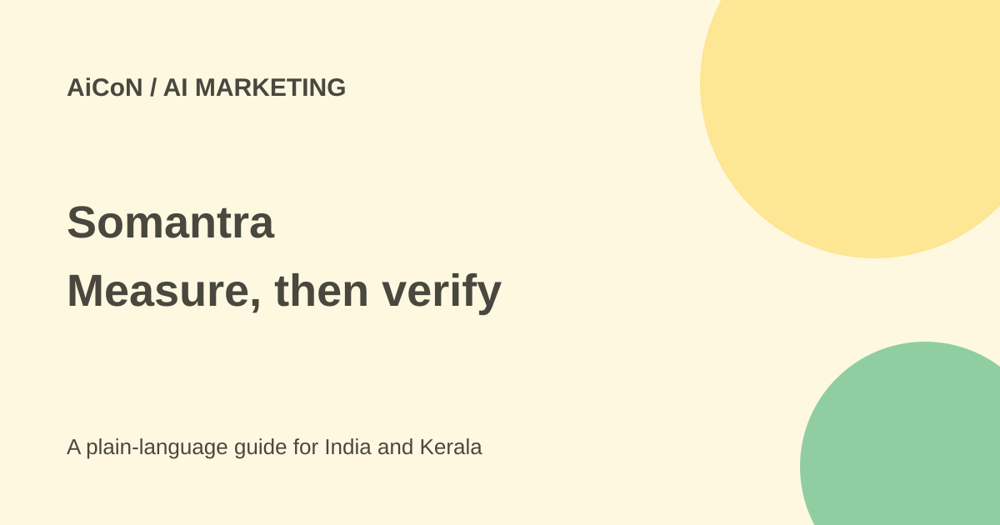

Somantra: free brand audit and AI-search metric limits
Somantra studies how AI answers mention and recommend brands. Its scores can help a marketing team ask better questions, but they are not an official AI ranking or proof of future sales.

What is Somantra?
Somantra is an AI-search intelligence platform for brands. Its page describes monitoring answers from services such as ChatGPT, Google AI Overviews, Google AI Mode, Claude and Perplexity. AEO means Answer Engine Optimization: making useful brand information available in direct answers, not only chasing traditional search clicks.
The product models customer profiles and multi-step conversations. It looks beyond a single mention to whether a brand appears during discovery, comparison and a later decision. These simulated journeys are a research method, not a record of every real customer's private conversation.
What do its scores mean?
Brand Mindshare measures relative visibility through mentions and citations. Brand Consideration uses Somantra's own model to assess positioning against competitors. Brand Engagement tracks presence through stages of a conversation. The current site also names Brand Position.
These are proprietary metrics. Do not call them a universally accepted industry standard. A score change can reflect prompts, model versions, sources, regions or sampling, as well as changes to your site. Ask to see the underlying responses before acting on a dashboard number.
Is there a free option?
The official FAQ offers a free brand audit covering 15,000-plus simulated conversation paths across five ideal customer profiles. You request it through the contact form. That is not the same as an unlimited free self-service platform or immediate access to all monitoring features.
The official comparison page describes Somantra pricing as enterprise pricing scoped to the customer's needs. A current fixed subscription quote was not verified for this guide. Ask about engines, regions, languages, sampling frequency, reports, user access, service work and renewal before paying.
How an Indian brand can evaluate it
- Choose a real customer question, not only your brand name.
- Define your market, competitors, languages and buyer types. A Kerala local service and an international software company need different samples.
- Request the audit and confirm what information the form needs. Do not submit private customer records unnecessarily.
- Inspect sample prompts and complete answers, including their dates and cited sources.
- Compare claimed recommendations with what a person can reproduce in the same context.
- Fix factual, useful content first, then measure again using a comparable sample.
Limits and privacy
An AI mention does not establish an endorsement by the platform. A citation does not guarantee accuracy, a click or a purchase. Small wording changes can change an answer. Treat the company's findings about that behavior as its own research unless independently reproduced.
The product says it queries public-facing AI platforms. Ask for its data-handling agreement, hosting, retention and deletion terms before uploading internal strategy. A broad security statement on a marketing page is not enough to establish all terms for your organisation.
What changed since the original AiCoN post?
The original introduced three scores and a free audit. This guide confirms the current requested-audit route, explains that the journeys are simulated and includes the additional metric named on the site. It keeps the scores as Somantra's own measures rather than an industry-wide rule.
Frequently asked questions
Is a free audit the full platform?
No. Verify the audit scope and any later paid contract.
Can it guarantee AI recommendations?
No guarantee was established. AI outputs vary across prompts and contexts.
Will higher scores prove more sales?
No. Check actual customer outcomes separately.
Who is it for?
Marketing teams that can inspect samples, improve real information and compare results over time.
Sources: Official product and FAQ · Official pricing description. Checked 7 October 2026.